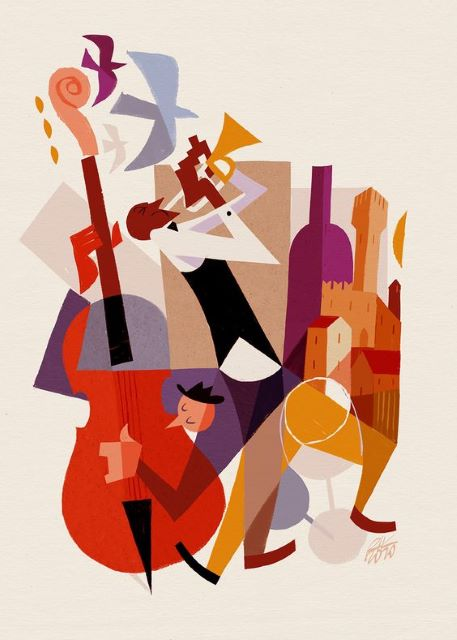
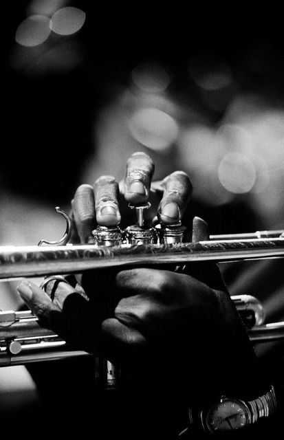
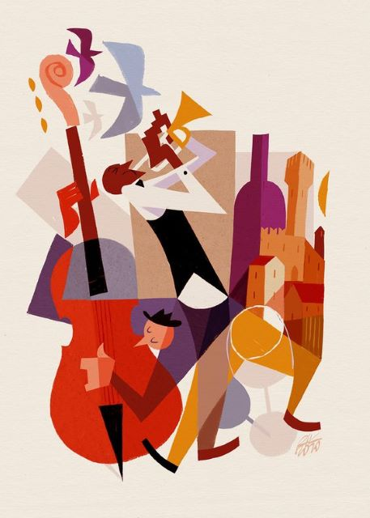
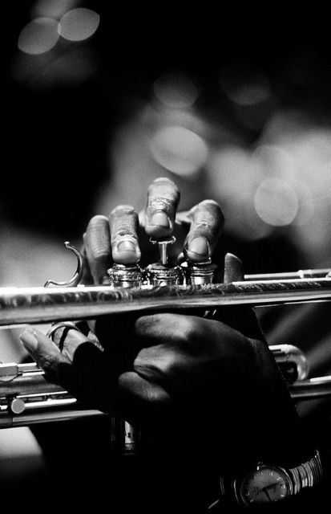
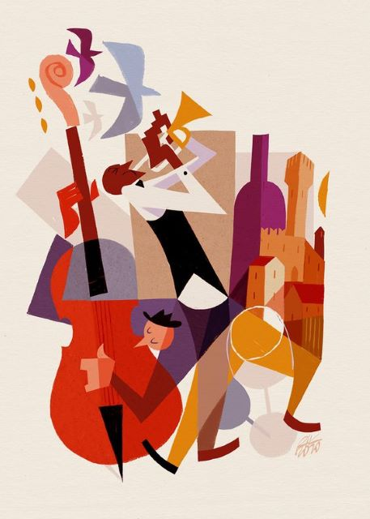
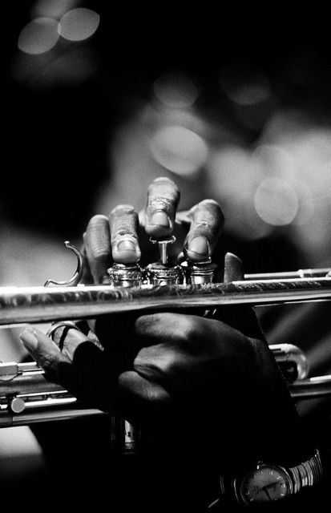

jazz


jazz Jazz-ul (cuvânt de origine engleză, scris uneori jaz, pronunțat în română [dʒɛz]
sau [dʒæz]) este un stil de muzică apărut la începutul secolului al XX-lea în orașul New Orleans din statul american
Louisiana, având proveniența în melodiile populației negre, urmașă a sclavilor de origine africană. În muzica de
jazz se recunosc în special influențe și tonalități de blues și ragtime, la care se adaugă și elemente ale muzicii
europene. Mai târziu au fost preluate în jazz și ritmuri ale muzicii latino-americane.
Deși de dată relativ recentă, originea și semnificația inițială a cuvântului "jazz" (la început
pronunțat în engleză la fel ca și jass) este controversată. O ipoteză ar fi înrudirea fonetică cu expresia
"chasse-beau", o figură de dans din Louisiana, cândva colonie franceză. Alții cred că ar deriva din cuvântul
Jézabel, numele unei prostituate din New Orleans, în ortografie americană simplificată "Jazz-Bel". În jargonul
populației locale, cuvintele jasm sau gism înseamnă rapiditate și energie, au însă și o semnificație erotică. În
1917, formația Original Dixieland Jazz Band a avut mult succes la sala "New York Columbus Circle", și cuvântul
"jazz" a intrat în vocabularul curent, deși apăruse deja cu referire la muzică în 1913 într-un ziar din San
Francisco, fără să fi avut un ecou deosebit.
Jazz-ul s-a dovedit a fi foarte greu de definit, deoarece cuprinde o gamă largă de muzică ce se
întinde pe o perioadă de 100 de ani, de la ragtime până in prezent. Au fost facute încercări de a defini jazz-ul din
perspectiva altor tradiții muzicale, cum ar fi istoria muzicii europene sau muzica africană. Dar criticul
Joachim-Ernst Berendt susține ca termenii săi de referință și definiția ei ar trebui să fie mai largă, definind
jazz-ul ca o "formă de artă muzicală care provine din Statele Unite ale Americii, prin confruntarea negrilor cu
muzica europeană" și argumentând că aceasta diferă de muzica Europeană în care jazz-ul are o "relație specială în
timp definită ca fiind 'swing'", implică "o spontaneitate și vitalitate de producție muzicală în care improvizația
joacă un rol" și conține o "sonoritate și manieră de frazare care reflectă individualitatea performanței
muzicianului de jazz".
O definiție mai largă care cuprinde toate diferitele epoci de jazz a fost propusă de Travis
Jackson:"aceasta este muzica care include calități cum ar fi swing, improvizații, interacșiunde de grup, dezvoltatea
unei "voci individuale", și fiind deschis la diferite posibilități muzicale". Krin Gibbard a oferit o imagine de
ansmblu a discuției privind definițiile, argumentând că "jazz-ul este un construct" care, în timp ce artificial încă
mai este util să desemneze "un număr de muzici cu suficiente în comun să fie înțelese ca parte a unei tradiții
coerente". Spre deosebire de eforturile depuse de comentatori și entuziaști ai anumitor tipuri de jazz, care au
susținut definiții mai restrânse ce exclud alte tipuri, muzicienii înșiși sunt adesea reticenși în a defini muzica
pe care o cântă. Duke Ellington, una dintre figurile cele mai faimoase a jazz-ului, a declarat: "totul e muzică".


jazz